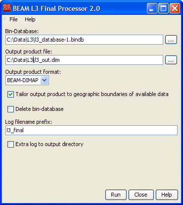

The L3 Final Processor converts a bin database to a final level 3 product by
running a finalisation process on the accumulated bins (depending on the needs
of the algorithm) and applying a projection (geographic lat/lon) to the binned
data cells.

- Bin-Database: Select the location of the bin database by either typing
the database path into the text filed or by pressing the file selection button
to invoke a
standard file dialog.
- Output product file: Select the output product file by either typing
the product path into the text filed or by pressing the file selection button
to invoke a
standard file dialog.
- Output product format: Select one of the available output product
formats. Currently only "BEAM-DIMAP"
is available.
- Tailor output product to geographic boundaries of available data: Enable
this checkbox to tailor the geopraphic size of the output product to the area that really contains data.
- Delete Bin Database: Select whether to delete the bin database after
final product creation or to keep it (for further products to be added).
- Log filename prefix: Select the prefix text used for the logfile
written during processing. For a complete description of the logging capabilities
please refer to the logging documentation.
- Extra log to output directory: Select whether to write an additional
log file to the directory selected for the output product.
The L3 Final Processor
processing request file
The following table describes
the L3 Final Processor specific processing request file parameter. For a detailed description
of the processing request file concept and file specification please look at the general
description section.
| Parameter name |
Description |
Type |
Valueset |
| type |
Request type. Mandatory attribute of the Request element |
String |
"BINNING" |
| process_type |
The request process type identifier. |
String |
"finalize" |
| database |
Absolute path to bin database to be created. |
Path |
- |
| tailoring |
Whether to tailor the output product. |
Boolean |
"true" or "false" |
| delete_db |
Whether to keep or to delete the bin database. |
Boolean |
"true" or "false" |